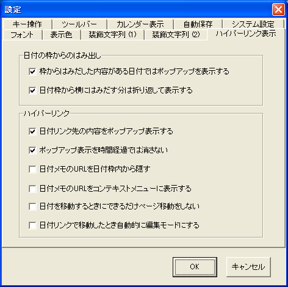
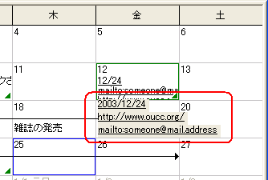

[ハイパーリンク表示]タブは，記入した内容のポップアップ， 自動ハイパーリンクに関わる設定項目を含みます．
日付メモから文字列がはみ出している場合（はみ出し表示のマークが示されている場合）， その日付セルにマウスカーソルを乗せたとき，その日付の内容をポップアップ表示します．
日付メモから文字列がはみ出している場合， できるだけ折り返して中に詰めます．
この機能は，周期予定とTODOアイテム，日付メモに対してのみ有効で， 期間予定には効果がありません．また，URLの途中では折り返しは発生しません．
予定内に記入された日付文字列上にマウスカーソルを乗せたとき，自動で その日付の予定をポップアップ表示します．
ポップアップウィンドウは，表示から数秒程度で自動で消えます．
この項目にチェックすると，ポップアップウィンドウは時間経過では消えなくなり， 明示的にESCキーを押すか，マウスカーソルがポップアップの 適用範囲外に移動するまでの間，継続して表示されるようになります．
日付メモ内に入力したURLを，画面上には直接表示しなくなります．
隠れている URL には，コンテキストメニューや， ポップアップ表示された内容を通じてアクセスすることができます．
日付メモ内に入力したURLを，その日付を右クリックしたときに 表示されるコンテキストメニューにも表示します．
このとき，長いURLは自動で切り詰めて表示されます．
日付リンクで移動したとき，リンク先の日付のタブがもし存在しないなら自動で開かれます．
このとき，タブは月単位で設定されているため，たとえば2003年12月を表示しているときに 2004年1月1日に移動しようとすると，やはりタブ移動が発生します．
この項目にチェックすると，移動先の日付が，移動元のタブの「６週間表示」 範囲に収まっているときは，タブを移動しないようにします．
この項目にチェックすると，日付ハイパーリンクで移動した後， その日付の予定を編集する状態になります．
どこにカーソルが移動したかを明らかにしたい場合などに使えます．
1.5.1で，設定ダイアログから消えました．
現状はまだ機能としては有効になっていますが， 以降のバージョンで消滅する予定です．
機能： この項目にチェックすると，日付メモ内に入力したURLは，その日付を選択したとき， ラベルとして日付の下に列挙されるようになります． ラベルをダブルクリックすることで，URLを開くことができます．
